Empire Stone × Empire Granite — QA
Test Cases: E2E Flow — Mode 5 (Stone Production / FG Production)
เรื่องราวเดียวต่อเนื่องกันตั้งแต่เพิ่มบรรทัดสินค้าสำเร็จรูป (FG) ยืนยันคำสั่งขาย แตกเป็น 2 เส้นทางจริงตามสภาพสต็อก (ต้องผลิตใหม่ vs. มีของพอ) ย้าย Slab เข้าสถานีผลิต เปิด wizard "Produce FG" ตัด/ผลิตจริง ส่งมอบสินค้า จนถึงออกใบแจ้งหนี้ รับชำระเงิน และตรวจรายการบัญชี — ไม่ใช่การเทสฟีเจอร์แยกส่วน และไม่มีข้อไหนเป็นการดักฟิลด์บังคับ/error ทั่วไป เดินตามได้เองแม้ไม่ใช่ technical user ตัวเลข "ตัวอย่างจริง" มาจากการรันจริงที่ทำขึ้นเฉพาะสำหรับเอกสารนี้ ไม่ใช่ตัวเลขสมมติ — รันใหม่ทั้งหมดบนกลไกตัด Slab แบบใหม่ (Native MO, เปลี่ยน 13 ก.ย. 2026) และยืนยันว่า wizard "Produce FG" ยังทำงานถูกต้องทุกประการบนกลไกใหม่นี้
13Test Case ทั้งหมด
4หมวด
10High Priority
3Medium Priority
0Low Priority
G1. ขาย (Sale — สินค้าสำเร็จรูปที่ต้องผลิตจาก Slab)
ADR-029 — ขายสินค้า FG (เช่น Countertop) ที่ยังไม่ได้ผลิตจริงได้เลย · 2 test cases
| TC ID | Scenario | Precondition | Steps | ข้อมูลตัวอย่าง | Expected Result | Priority | ภาพหน้าจอ |
|---|---|---|---|---|---|---|---|
| TC-E2E-M5-01 | เพิ่มบรรทัดสินค้า FG (Finished Good) ใน Sale Order ใหม่ | มี Slab พร้อมอยู่แล้วในสต็อกที่สถานีผลิต (Stone Production) จาก Material ที่ตั้งค่า FG ไว้ (มี Block/Slab/FG ครบ 3 สินค้า) |
|
ลูกค้า = "ทดสอบ E2E - Test Customer" สินค้า = E2E Mode5 Fresh Test - Countertop |
เพิ่มบรรทัดสำเร็จ ราคาต่อหน่วยขึ้นเป็นราคาตั้งต้นของสินค้า FG (ตัวอย่างจริง: 8,500/หน่วย) | Medium | 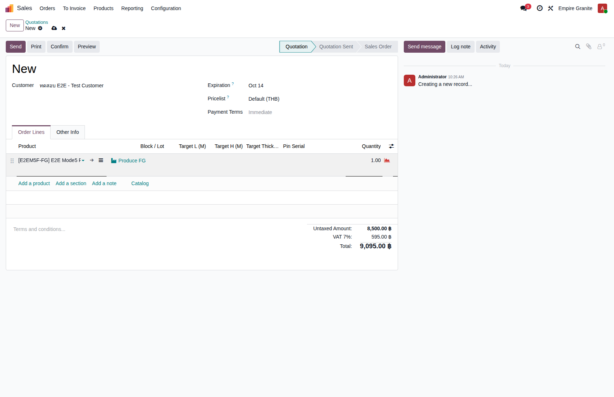 |
| TC-E2E-M5-02 | ยืนยัน (Confirm) Sale Order — ยังไม่มี FG ในสต็อกเลย | ทำ TC-E2E-M5-01 เสร็จแล้ว |
|
- | SO เปลี่ยนสถานะเป็น Sales Order ยอดรวม 9,095.00 บาท (รวม VAT) — บรรทัดสินค้า FG ปรากฏลิงก์ "Produce FG" ให้กดเพื่อผลิต เพราะยังไม่มีสต็อก FG เลย — ตัวอย่างจริง: S00127 | High |
G2. ผลิต — กรณี FG ไม่มี/ไม่พอในสต็อก (ต้องผลิตจริง)
ADR-029, stone.fg.production.wizard — เปิด wizard "Produce FG" ตัดจาก Slab ที่มีอยู่ · 3 test cases
| TC ID | Scenario | Precondition | Steps | ข้อมูลตัวอย่าง | Expected Result | Priority | ภาพหน้าจอ |
|---|---|---|---|---|---|---|---|
| TC-E2E-M5-03 | เปิด wizard "Produce FG" — ระบบจับคู่ Slab ที่จะใช้ให้อัตโนมัติ | ทำ TC-E2E-M5-02 เสร็จแล้ว มี Slab พร้อมอยู่ที่สถานีผลิตแล้ว (ย้ายด้วย Internal Transfer ล่วงหน้า) |
|
- | เปิด wizard สำเร็จ ช่อง "Slab to Consume" เติมให้อัตโนมัติเป็น Slab ตัวแรกที่มี Material ตรงกันและสถานะ Available (v1: จับคู่ตาม Material อย่างเดียว) พร้อมบรรทัดผลผลิตเริ่มต้น 1 บรรทัดตรงกับสินค้าที่ขาย จำนวน 1 — ตัวอย่างจริง: Slab BLK-26-0029 #1 | High | 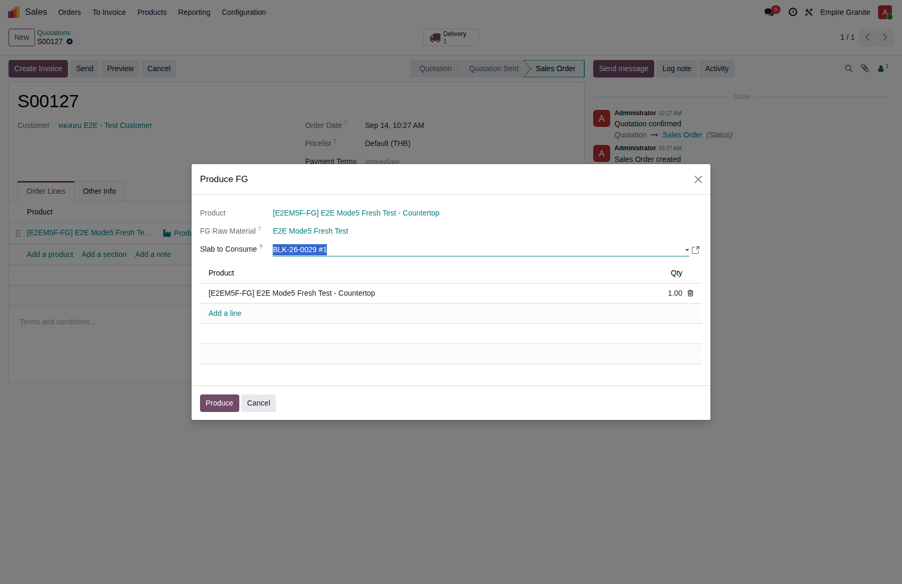 |
| TC-E2E-M5-04 | ปรับจำนวนผลผลิตแล้วกด "Produce" — สร้าง Manufacturing Order ผลผลิตต่อ Slab กำหนดตอนผลิตจริง ไม่ใช่อัตราตายตัว (ADR-029) — เคสนี้ตั้งใจผลิต 2 หน่วยจาก Slab เดียว แม้บรรทัด SO ต้องการแค่ 1 หน่วย เพื่อเผื่อสต็อกไว้ขายลูกค้ารายถัดไป (ดู TC-E2E-M5-07) |
ทำ TC-E2E-M5-03 เสร็จแล้ว |
|
จำนวนผลผลิต = 2 | สร้าง Manufacturing Order สำเร็จ ยืนยันอัตโนมัติทันที (Confirmed) ระบบเติม Bill of Material ให้อัตโนมัติจาก FG Material ที่เลือก จำนวนที่จะผลิต = 2.00 Slab ที่เลือกถูกจับจองเป็นวัตถุดิบ (To Consume 1.00, Available) ผูกกับบรรทัด SO เดิม ("For Sale Order Line") — ตัวอย่างจริง: EG01/STFG/00015 | High | 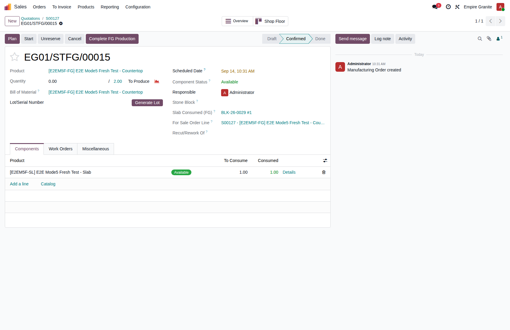 |
| TC-E2E-M5-05 | กด "Complete FG Production" — ได้สินค้า FG จริงเข้าสต็อก | ทำ TC-E2E-M5-04 เสร็จแล้ว |
|
- | Manufacturing Order เสร็จสมบูรณ์ (สถานะ Done) จำนวนที่ผลิตจริง = 2.00/2.00 ได้ Lot/Serial ใหม่ของสินค้า FG (ตัวอย่างจริง: FG-EG01/STFG/00015) Slab ที่ใช้เป็นวัตถุดิบเปลี่ยนสถานะเป็น Consumed หมดสภาพขายต่อ สินค้า FG 2 หน่วยเข้าสต็อกจริง | High | 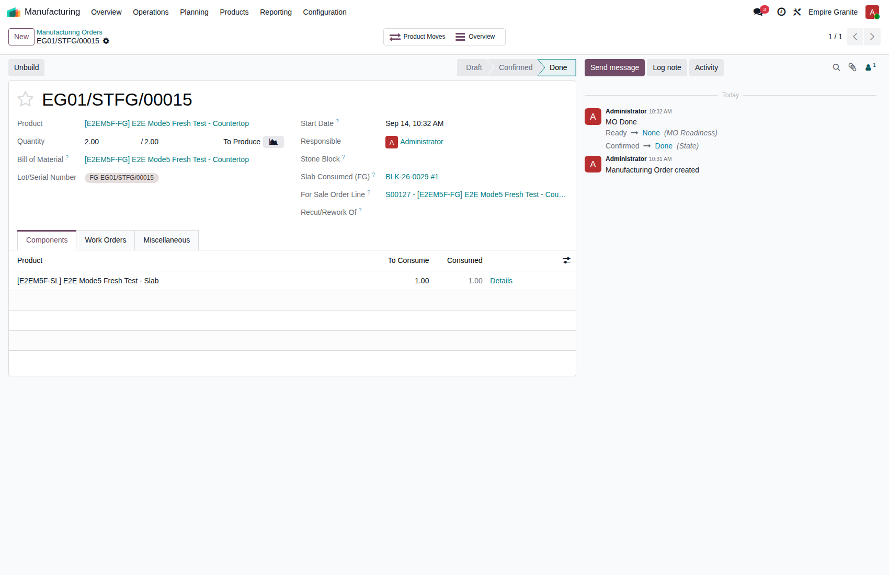 |
G3. จัดส่ง + ขายซ้ำ — กรณี FG มีสต็อกพอแล้ว (ไม่ต้องผลิตซ้ำ)
ส่งของบรรทัดแรก แล้วขายลูกค้าใหม่ด้วยสต็อกส่วนเกินที่เหลือ ไม่ต้องผ่าน wizard อีก · 3 test cases
| TC ID | Scenario | Precondition | Steps | ข้อมูลตัวอย่าง | Expected Result | Priority | ภาพหน้าจอ |
|---|---|---|---|---|---|---|---|
| TC-E2E-M5-06 | จัดส่งใบส่งของของบรรทัดแรก (SO1) | ทำ TC-E2E-M5-05 เสร็จแล้ว มีสินค้า FG พร้อมส่งแล้ว |
|
- | ใบส่งของเปลี่ยนสถานะเป็น Done สำเร็จทันที (จองสต็อกไว้ให้แล้วตั้งแต่ผลิตเสร็จ) — ตัวอย่างจริง: EG01/OUT/00081 | High | 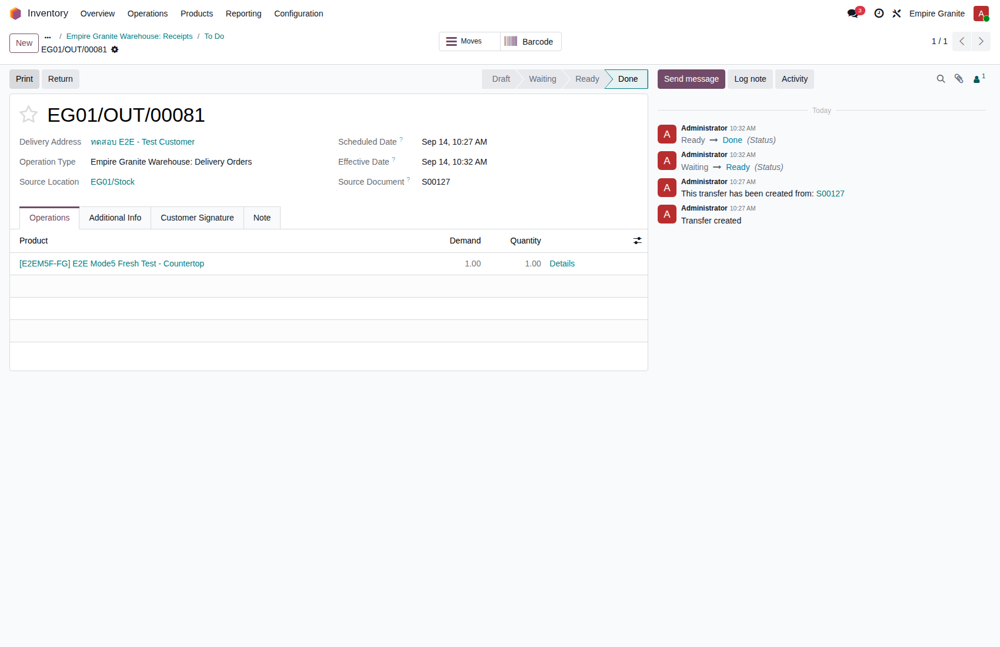 |
| TC-E2E-M5-07 | สร้าง Sale Order ใหม่ขายสินค้า FG ตัวเดียวกันอีกครั้ง — ใช้สต็อกส่วนเกิน ✨ พฤติกรรมจริงที่พบ: ลิงก์ "Produce FG" ยังปรากฏอยู่บนบรรทัดเสมอ ไม่ว่าสต็อกจะพอหรือไม่ — จุดต่างจริงของ G2a คือ "ไม่จำเป็นต้องกด" เพราะใบส่งของจองสต็อกสำเร็จได้เองทันที ไม่ใช่ว่าลิงก์หายไป |
ทำ TC-E2E-M5-06 เสร็จแล้ว มีสินค้า FG เหลือในสต็อก 1 หน่วยจากการผลิตครั้งก่อน |
|
ลูกค้า = "ทดสอบ E2E - Test Customer" สินค้า = E2E Mode5 Fresh Test - Countertop จำนวน = 1 |
SO ยืนยันสำเร็จ ยอดรวม 9,095.00 บาทเท่าเดิม ใบส่งของที่เกิดขึ้นอัตโนมัติจองสต็อก (Reserved/Assigned) ได้ทันทีจากสต็อกส่วนเกินที่เหลือ โดยไม่ต้องเปิด "Produce FG" เลย — ตัวอย่างจริง: S00128 | High | 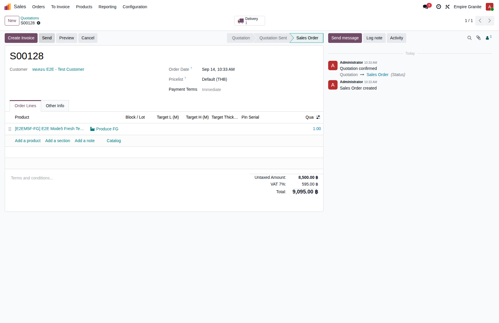 |
| TC-E2E-M5-08 | จัดส่งใบส่งของของบรรทัดที่สอง (SO2) | ทำ TC-E2E-M5-07 เสร็จแล้ว |
|
- | ใบส่งของเปลี่ยนสถานะเป็น Done สำเร็จทันที เหมือนกับ TC-E2E-M5-06 ทุกประการ — ตัวอย่างจริง: EG01/OUT/00082 | High | 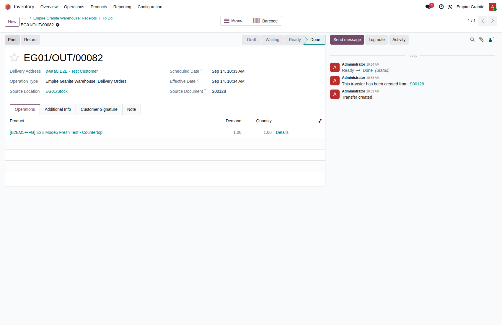 |
G4. บัญชี (Accounting + Payment)
ออกใบแจ้งหนี้ทั้ง 2 ใบ + รับชำระเงิน + ตรวจรายการบัญชี (COGS ต้องไม่เป็น 0) · 5 test cases
| TC ID | Scenario | Precondition | Steps | ข้อมูลตัวอย่าง | Expected Result | Priority | ภาพหน้าจอ |
|---|---|---|---|---|---|---|---|
| TC-E2E-M5-09 | ออกใบแจ้งหนี้บรรทัดแรก (SO1) | ทำ TC-E2E-M5-06 เสร็จแล้ว |
|
- | ใบแจ้งหนี้ยืนยันสำเร็จ สถานะ Posted ยอดรวม 9,095.00 บาท (รวม VAT) — ตัวอย่างจริง: INV/2026/00031 | High | 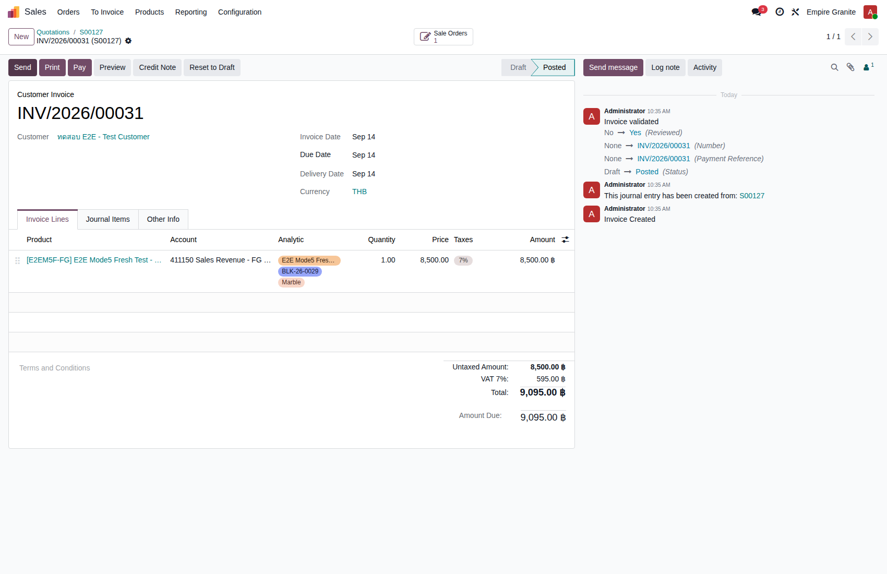 |
| TC-E2E-M5-10 | ออกใบแจ้งหนี้บรรทัดที่สอง (SO2) | ทำ TC-E2E-M5-08 เสร็จแล้ว |
|
- | ใบแจ้งหนี้ยืนยันสำเร็จ สถานะ Posted ยอดรวม 9,095.00 บาทเท่ากับใบแรกทุกประการ (ราคาขายเท่ากัน) — ตัวอย่างจริง: INV/2026/00032 | High | 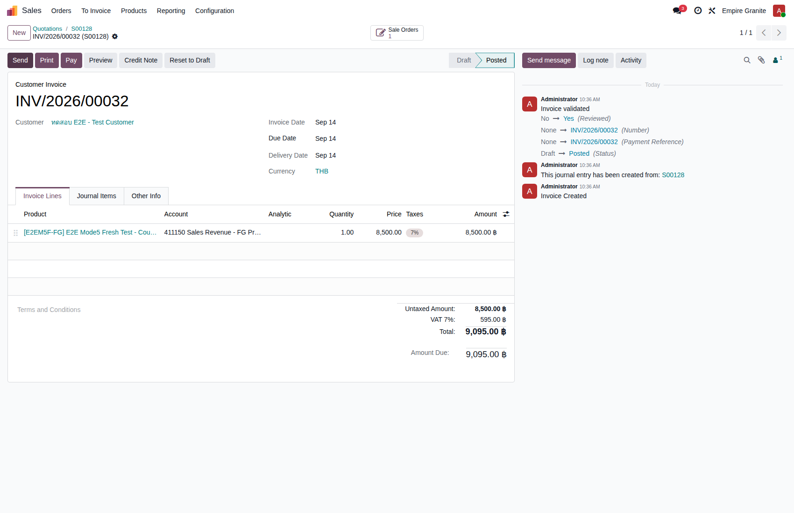 |
| TC-E2E-M5-11 | ตรวจรายการบัญชีของใบแจ้งหนี้ (Journal Items) — ต้นทุนขาย (COGS) ต้องไม่เป็น 0 | ทำ TC-E2E-M5-09 เสร็จแล้ว |
|
- | เห็นรายการครบ 5 บรรทัด สมดุลกันทั้ง 2 ฝั่ง (เดบิต = เครดิต) พร้อม Analytic Distribution ผูกกับ Material/Block ทุกบรรทัด — ตัวอย่างจริง INV/2026/00031: เครดิต "411150 Sales Revenue - FG Production" 8,500.00, เครดิต "213200 Output VAT" 595.00, เดบิต "112100 Trade Receivables" 9,095.00, เครดิต "113150 Inventory - Stone FG (Finished Goods)" 375.00, เดบิต "511100 Cost of Goods Sold" 375.00 — รวมสมดุล 9,470.00 = 9,470.00 (COGS ไม่ใช่ 0 บาท ตัดจริงตามบัญชีที่ถูกต้อง) | High | 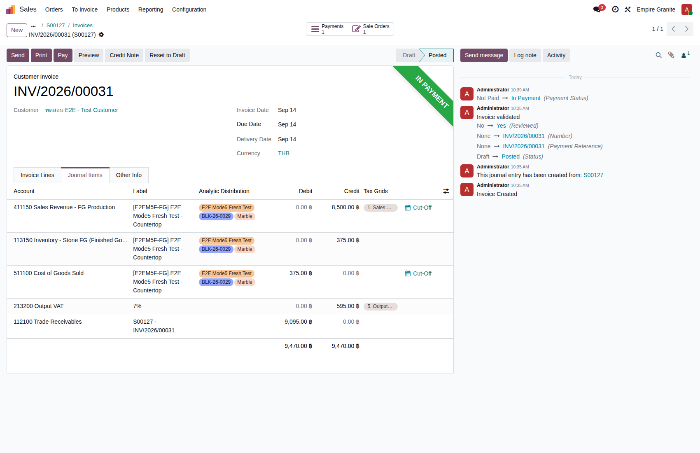 |
| TC-E2E-M5-12 | บันทึกรับชำระเงินใบแจ้งหนี้บรรทัดแรก (SO1) | ทำ TC-E2E-M5-09 เสร็จแล้ว |
|
- | ใบแจ้งหนี้ขึ้นสถานะ "In Payment" ทันที — ตัวอย่างจริง: INV/2026/00031 | Medium | 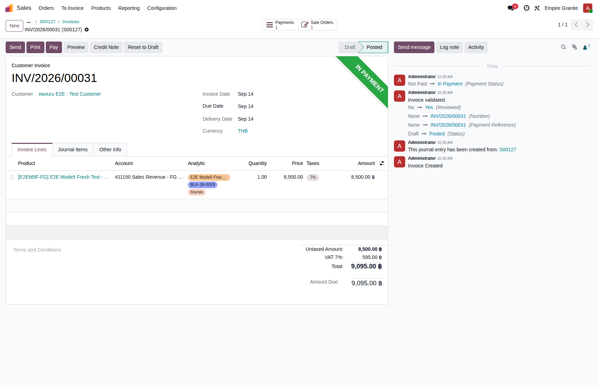 |
| TC-E2E-M5-13 | บันทึกรับชำระเงินใบแจ้งหนี้บรรทัดที่สอง (SO2) | ทำ TC-E2E-M5-10 เสร็จแล้ว |
|
- | ใบแจ้งหนี้ขึ้นสถานะ "In Payment" ทันทีเหมือนกัน — ตัวอย่างจริง: INV/2026/00032 | Medium | 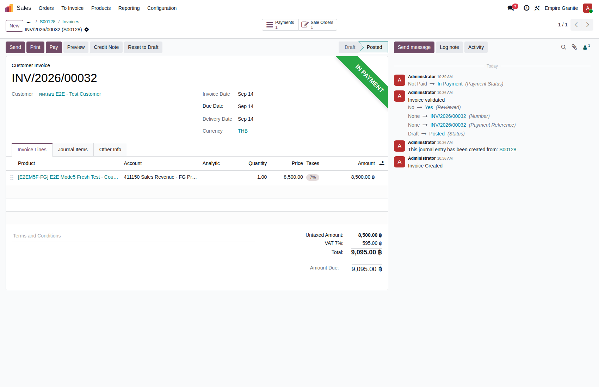 |